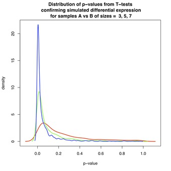
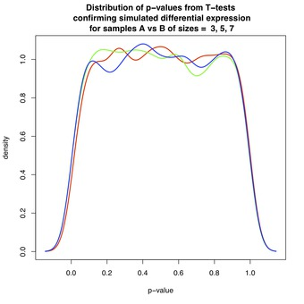
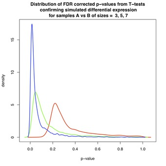
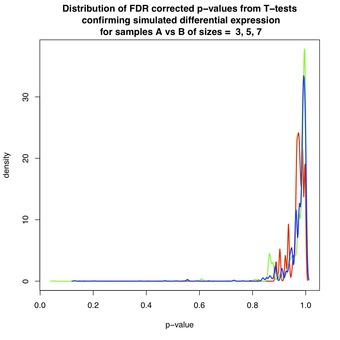

An Empirical Justification Of False Discovery Rate Correction With Small Samples
A central problem in genomics is the identification of the molecular machinery that is responsible for the phenotype, the set of all observable characteristics, of an organism. One of the more informative sources of evidence is gene expression, which is the abundance of molecules that a gene produces in a given context. The advent of high-throughput technologies and related statistical methods provide a means to pick the most probable candidate genes - the "low-hanging fruit" - that determine phenotype.
- High-throughput technologies enable measurement of the differential expression (DE) between two groups or conditions for a large collection of genes, and
- Statistical methods, known as false discovery rate (FDR) correction, help to determine which of the measured differences are truly significant. These methods play an important role in cost-benefit analysis when deciding how many potential DE genes to select for validation.
In the following, a simulation study involving randomly generated gene expressions for a large number of genes is used to analyze the behaviour of p-values and the influence of false discovery rate (FDR) correction with small sample sizes.
Hypothesis Testing
Hypothesis testing is used to decide whether an observed DE gene occured by chance ("the null"), or constitutes evidence of an underlying biological effect ("the alternative"). The p-value for a hypothesis test is the chance of observing measurements as extreme as found in the experiment under the assumption that there is no difference in the two conditions. It is closely related, but not necessarily equal, to the probability of false discovery, which is the probability that the gene is falsely classified as DE.
Suppose there are \( N \) samples each from conditions \( A \) and \( B \). The magnitude of DE is the difference between the two means, \( \bar{x}_A-\bar{x}_B \). If the samples are independent, normally-distributed, and the variances of the two groups are the same, then a suitable test is the T-test. A t-statistic is calculated as
\[
T = \frac{\bar{x}_B - \bar{x}_A}{s\sqrt{2/N}}
\]
where \( s \) is the pooled estimate of the standard deviation. Under the assumptions of the test, the value \( T\, \) follows a Student's t-distribution, with \( d = 2 * N - 2 \) degrees of freedom. The p-value for the 2-sided T-test is computed as
\[
p = 1 - P\left( -|T| < t < |T| \right) .
\]
If the p-value is less than the level-of-significance \( \alpha \), then the null hypothesis is rejected, and the observed DE is significant at that \( \alpha \)-significance level.
Example
Suppose there are \( N=4 \) samples, each, from both conditions with the following gene expression values: \( A = \left\{ 2, 4, 1, 1 \right\} \) and \( B = \left\{ 9, 11, 10, 7 \right\} \). The t-statistic is calculated as [ttest-eg] where \( s \approx 4.14\,\) is the pooled estimate of the standard deviation. Using the lookup table on Student's t-distribution, the p-value for this 2-sided test is \( p < 0.05 \) supporting the conclusion that significant DE was observed.
\[
T = \frac{(9 + 11 + 10 + 7)/4 - (2 + 4 + 1 + 1)/4}{s \sqrt{2 / 4}} \approx 2.478\,,
\]
False Discovery Rate Correction
When testing a large number of genes, a threshold based on the p-value fails to meaningfully convey the significance of the resulting list of genes because it does not take into account the elevated chance of observing extreme levels of differential expression through repeated, independent trials. So, for example, while it is unusual to observe a p-value of 0.01 in a single experiment, it is nevertheless expected that such small p-values will be observed with regularity as more and more genes are tested.
In order to provide a meaningful measure of significance, methods have been developed to estimate the false discovery rate for the top-k most DE genes. For example, the Benjamini-Hochberg–Yekutieli (BH) method estimates the FDR to be the minimum \( q_k \) such that [qval-eqn] where \( p_i \) is the \( i \)-th smallest p-value, and \( m \) is the number of genes tested. The value \( q_k \) for \( k = 1, \ldots, m \), associated with the gene at rank k, is referred to as the FDR-corrected p-value.
\[
p_i \leq \frac{i}{m} q_k, \quad \forall i\leq k \,.
\]
Genomics Simulation
A simulation study involving randomly generated gene expressions for a large number of genes is used to analyze the behaviour of p-values and the influence of false discovery rate (FDR) correction with small sample sizes. This setting was chosen to resemble the genomics context. Specifically, a large number of genes are simultaneously screened for differential expression between groups, using only a small number of samples.
- Each data set, numbered by
\( i = 1, \ldots, 2000 \), is comprised of\( N \)randomly generated samples from each of two groups\( A_i \)and\( B_i \). - Samples are assumed to be normally-distributed:
\( A_i \)'s samples have mean\( \mu_i \),\( B_i \)'s samples have mean\( \nu_i \), and both have variance\( \sigma_i^2 = 1 \). - With fixed values of the free parameters:
\( N \),\( \mu_i \), and\( \nu_i \), a p-value is calculated as above for each comparison, giving rise to a distribution across all 2000 tests.
In the figures below, the shape and variability of the distribution of p-values is analyzed. Each figure contains three curves corresponding to data sets of varying size: red(\( N=3 \)), green(\( N=5 \)), and blue(\( N=7 \)). Due to the procedure used for density estimation, the displayed curves extend beyond the unit interval, despite the fact that p-values are bounded \( 0 \leq p_i \leq 1 \). While in common practice there will be a mixture of: 1) DE, and 2) non-DE genes in a single experiment, these two cases are treated separately for clarity.
DE & Non-DE Genes Without FDR Correction
Figure 1 shows the distribution of p-values when the groups are differentially expressed, with \( \mu_i = 0 \) and \( \nu_i = 1 \) for all \( i \) . By design, a large proportion of p-values are close to zero, and for \( N \geq 7 \), below the commonly-used \( \alpha = 0.05 \) level-of-significance. However, each distribution has a long tail that extends toward \( p_i = 1 \). This effect is most pronounced for \( N=3 \), which is a reflection of the diminishing power of the T-test as \( N \) decreases. Thus, for \( N \geq 7 \), it is relatively easy to detect differential expression.
Figure 1 & 2:  
Figure 2 shows the distribution of p-values when groups \( A_i \) and \( B_i \) have the same mean \( \mu_i = \nu_i \) for all \( i \), and so are not differentially expressed. The p-values are approximately uniformly distributed, in accordance with a classical result in statistics. Roughly speaking, since under the null-hypothesis (non-DE) the test statistic follows a Student's-t distribution, the p-value is obtained from its cumulative distribution function, and is therefore uniform. See here, here, and here for details.
The take-home message of this simulation is that one observes \( p_i \leq 0.05 \) about 5% of the time for genes that are not differentially expressed. This result demonstrates why statistical methods have been developed to compensate for false positives in multiple testing scenarios.
DE & Non-DE Genes With FDR Correction
Figures 3 and 4 show the effect of FDR-correction on the distributions of p-values from Figures 1 and 2, respectively. Again, each figure contains three curves corresponding to data sets of varying size: red(\( N=3 \)), green(\( N=5 \)), and blue(\( N=7 \)). The dominant effect is that each distribution has been shifted toward \( p=1 \), lowering the estimated likelihood of discovery for each associated gene.
For example, for \( N=3 \) in Figure 3, the red curve shows an estimated false discovery rate of between 10-20% amongst the first selected DE genes. Fortunately, as shown in Figure 4, non-DE genes are assigned FDR-corrected p-values close to 1 thereby diminishing the chance that these genes will be selected.
Figure 3 & 4:  
Caveat : In practice, FDR-correction is applied to the mixture of p-values from DE and non-DE genes. Figures 3 and 4 do not accurately represent the behaviour of FDR-correction on this mixture, because each corrected p-value depends on the input collection to which it belongs. A more informative result could be obtained by performing FDR-correction on the entire set of simulated genes, DE and non-DE, before segregating and plotting.
Summary
This post analyzed the behaviour of p-values and the influence of FDR-correction in a simulation study with many genes but only a few samples from each group. Simulation studies such as this one are useful for illuminating the cost-benefit trade-offs encountered in the search for molecular determinants of phenotype with high-throughput screening.
Learn More
blog comments powered by Disqus